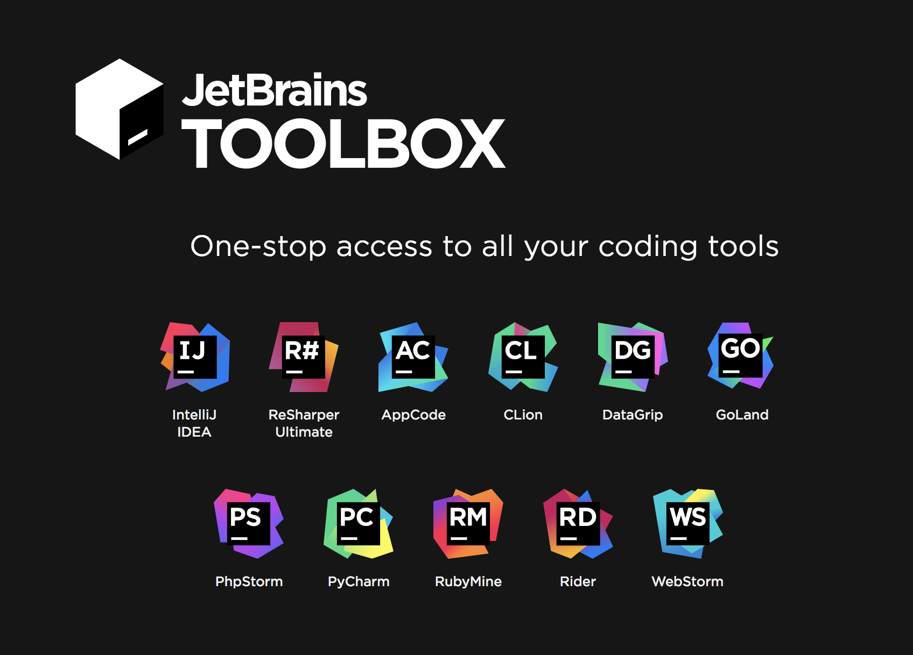
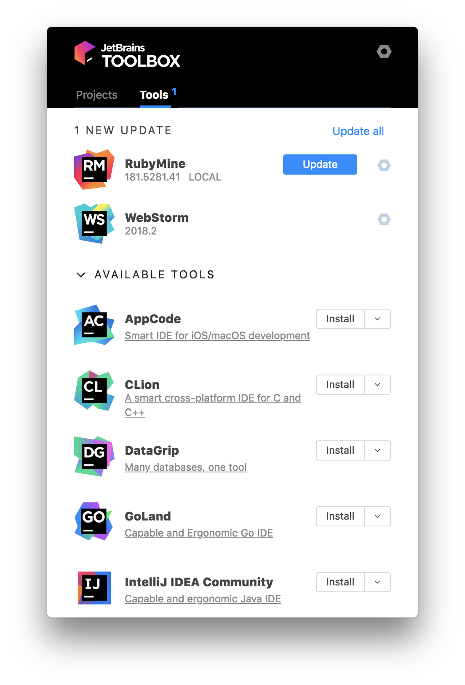
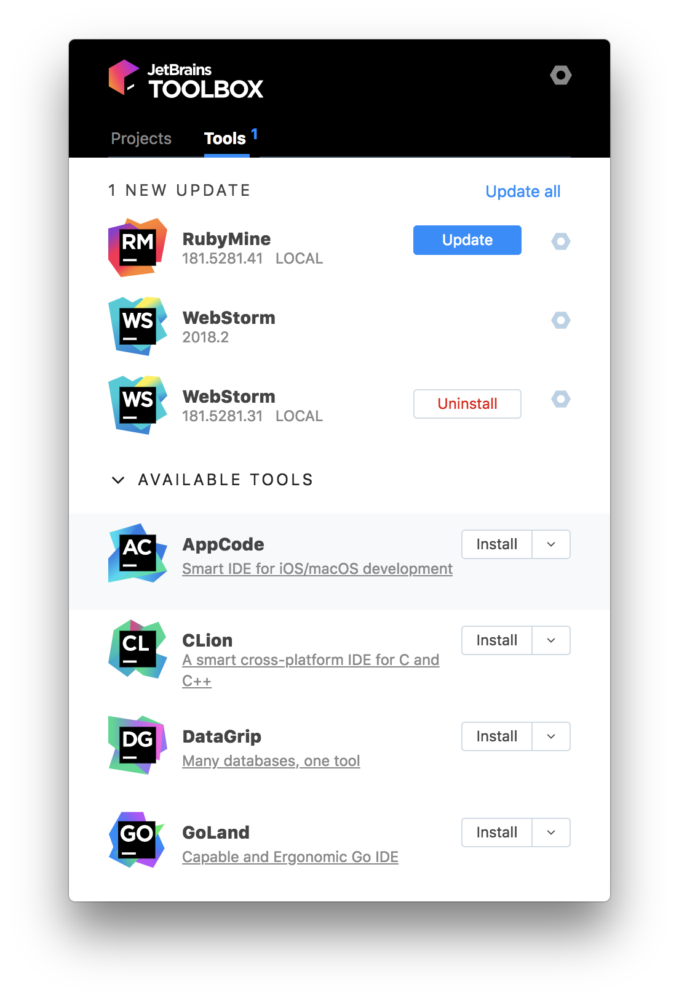
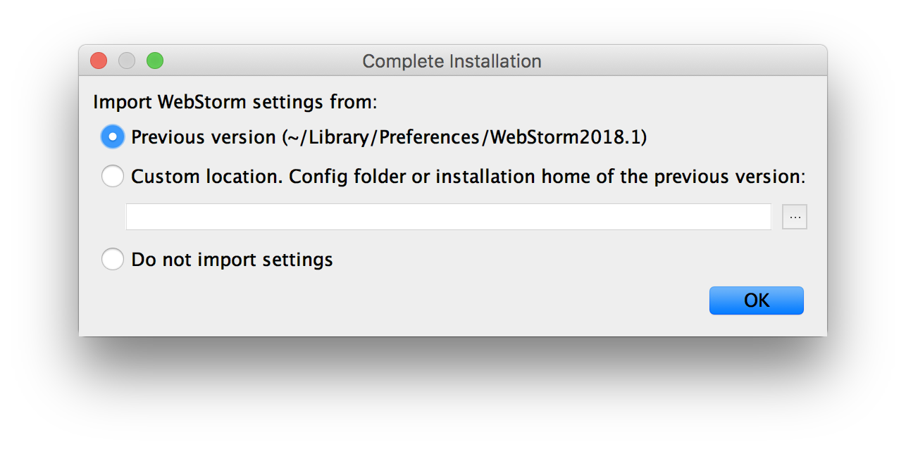

JetBrains Toolbox による IDE 管理
Jul 30, 2018
Adobe Creative Cloud みたいに，IntelliJ 製品を管理できる JetBrains Toolbox を使ってみた．
今まで気づかなかったが，JetBrains Toolboxがリリースされました！によると 2016 年にバージョン 1.0 がリリースされていたようだ．
Update や Install/Uninstall が管理できる．
ほぼ Adobe CC と同じ．Mac の Navigation Bar にもアイコンが表示され，そこから表示ができる．


Update すると，旧バージョンを Uninstall できる．

Update 後，起動すると旧設定を引き継ぐことができる．
これは今までの仕様と同じ．旧バージョンを Uninstall していても，設定ファイルは残っている．

しかし，CustomVMOption は引き継がれないようだ．
自分はメモリ割り当てなどを変更しているので，バージョンアップ後に Help > Edit Custom VM Options から設定を変更した．